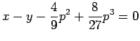
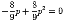
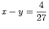
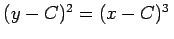
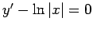
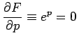

Inhalt Index DeskTop Bronstein

 Differentialgleichungen Gewöhnliche Differentialgleichungen Differentialgleichungen 1. Ordnung Singuläre Integrale und singuläre Punkte
Differentialgleichungen Gewöhnliche Differentialgleichungen Differentialgleichungen 1. Ordnung Singuläre Integrale und singuläre Punkte


Gewöhnlich kann ein singuläres Integral für keinen Wert der beliebigen Konstanten aus dem allgemeinen Integral ermittelt werden. Zur Bestimmung des singulären Integrals einer Differentialgleichung (9.17a) mit p = y' muß die Gleichung
hinzugezogen und p eliminiert werden. Wenn die so gewonnene Beziehung ein Integral der gegebenen Differentialgleichung ist, dann ist sie ein singuläres Integral. Die Gleichung des Integrals ist zuvor auf eine Form zu bringen, die keine mehrdeutigen Funktionen enthält, insbesondere keine Radikale, wobei auch die komplexen Funktionswerte zu berücksichtigen sind.
Radikale sind Ausdrücke, die durch Ineinanderschachtelung von algebraischen Gleichungen auftreten. Wenn die Gleichung der Integralkurvenschar bekannt ist, d.h. das allgemeine Integral der gegebenen Differentialgleichung, dann kann die Bestimmung der Einhüllenden der Kurvenschar, die singuläre Integrale darstellen, mit den Methoden der Differentialgeometrie erfolgen.
| Beispiel A |
|
Es ist die Differentialgleichung  zu lösen. Die Berechnung der zusätzlichen Gleichung mit Hilfe von (9.17d) ergibt . Elimination von p liefert a) x-y=0 und b) , wobei a) keine, b) eine singuläre Lösung ist, ein Spezialfall der allgemeinen Lösung . Die Integralkurven von a) und b) zeigt die folgende Abbildung. |
| Beispiel B |
|
Es ist die Differentialgleichung  zu lösen. Dazu wird die Gleichung auf die Form ep - |x| = 0 gebracht. Außerdem ist . Das singuläre Integral ergibt sich durch Elimination von p zu |